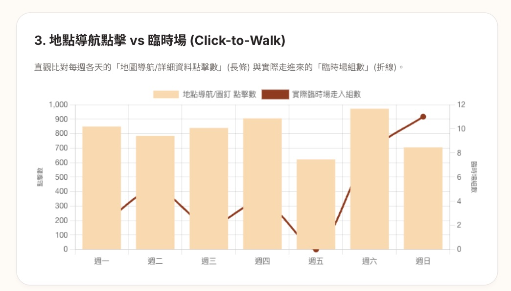
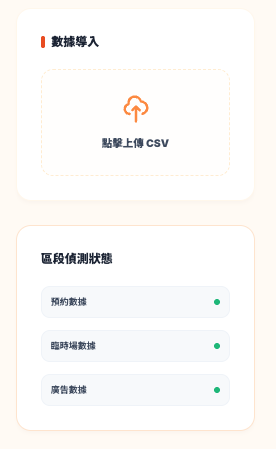

整合三方數據建構動態 Dashboard，特定平台成本降低 10%、ROAS 提升至 3–4。
頂級創意行銷跨平台投放廣告，廣告目標是提高週末預約量與平假日過路客組數。但公司從未建立數據追蹤系統，所有投放決策依賴直覺。
這個 Dashboard 有兩種使用者，需求不同，但痛點相同：
需要快速判斷廣告是否值得繼續投放。以前查資料耗時、往往找不到，最終只能靠感覺拍板。
需要在沒有完整交接的情況下快速上手。每次人員輪替，知識歸零，新人要重新摸索一遍。
關鍵洞察
問題不只是「沒有數據」——就算有數據，也沒有人有時間解讀它。Dashboard 必須讓非專業者在 30 秒內做出判斷。
廣告優化的核心障礙是數據斷層：
廣告投放、預約行為、每月費用分屬不同系統，無法交叉比對。
無法判斷哪個平台、哪個時段真正帶來預約轉換。
優化方向不明確，廣告投放仍依賴直覺判斷。
資訊架構原則
小公司沒有人力即時調整廣告——設計邏輯是「先快速掃一眼效益，不好再往下挖」。五個面向從整體到細節遞進，使用者只在需要時才往下看。
依使用者決策流程，定義五個由淺入深的追蹤面向
整合三方數據，建立統一結構，讓不同平台數字可以交叉比對
以 Gemini 協助撰寫公式、建議圖表類型，讓跨時間段、跨平台趨勢可視化
以下截圖數據均為示意用途，非真實數據。
分析各遊戲主題的人數組合分佈（多人／少人），並對照玩家通常在 7 天內或 7 天後預約的比例。由於系統開放兩個月內的場次預約，掌握各主題的提前期行為，有助於精準規劃各遊戲的廣告投放時機與預算配置。

原假設點擊地圖導航的人會轉化為臨時客，但分析後發現兩者無直接關係。透過折線對比讓這個落差清楚可見，避免誤判廣告效果。右上角可切換月份或全年度，讓不同時段的比對更有彈性。

讓使用者在進行分析前確認資料是否有誤。綠色代表該區段正常，紅色代表有問題。接替人員無需專業背景，也能自行排查上傳的 CSV 資料，降低交接成本。
